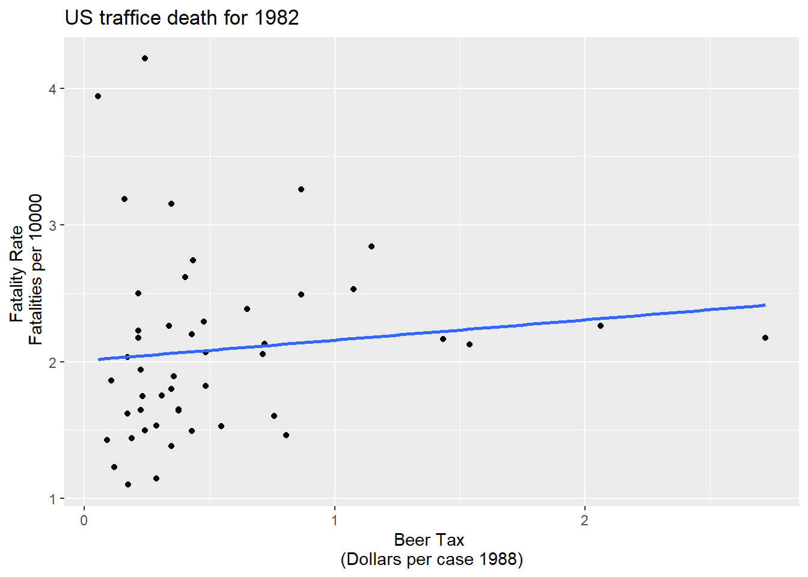
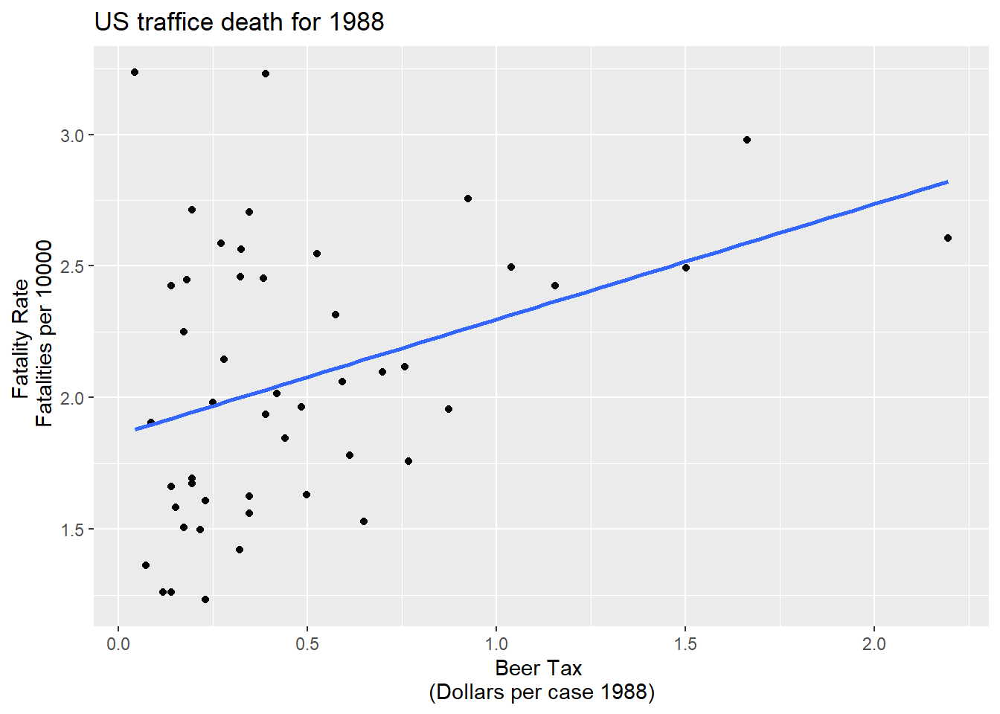
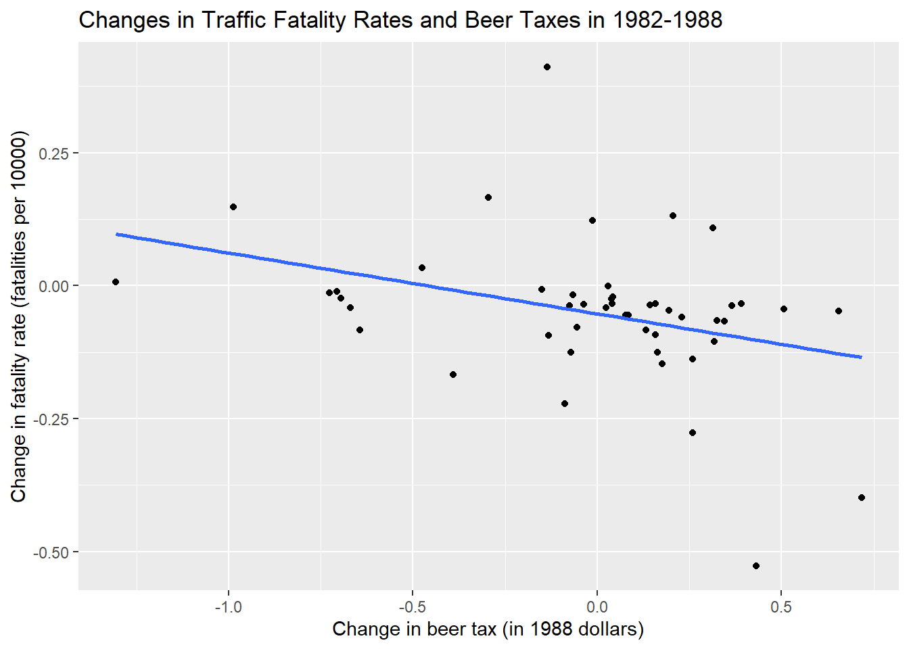

library(leaflet)
leaflet() %>%
addTiles() %>%
addMarkers(lng = 73.136946, lat =33.748294 ,
popup = "School of Economics, QAU, Islamabad")Panel Regression: Traffic Deaths & Wages
Panel Data Regression
A panel dataset contains observations on multiple entities (individuals), where each entity is observed at two or more points in time.
Hypothetical examples:
Data on 50 districts in 2010 floods and again in 2022, for 100 observations total.
Data on 100 SMES, each SME is observed in 3 years, for a total of 150 observations.
Data on 1000 individuals, in four different months, for 4000 observations total.
Notations for Panel Data
A double subscript distinguishes entities (states) and time periods (years)
\(i\) = entity (state), \(n\) = number of entities, so \(i = 1,\dots,n\)
\(t\) = time period (year), \(T\) = number of time periods so \(t =1,\dots,T\)
Data: Suppose we have 1 regressor. The data are:
\((X_{it}, Y_{i}t), i = 1,\dots,n,\ t = 1,…,T\)
Panel data with \(K\) regressors \((X_{1it},X_{2it},\dots,X_{kit} Y_{i}t), i = 1,\dots,n,\ t = 1,…,T\) \(n\) = number of entities (states) \(T\) = number of time periods (years) Also called longitudinal data
Why are panel data useful?
With panel data we can control for factors that: - Vary across entities (states) but do not vary over time - Could cause omitted variable bias if they are omitted - are unobserved or unmeasured – and therefore cannot be included in the regression using multiple regression
Here’s the key idea: > If an omitted variable does not change over time, then any changes in Y over time cannot be caused by the omitted variable.
Example of a panel data set
Observational unit: a year in a U.S. state - 48 U.S. states, so \(n\) = # of entities = 48$ - 7 years (1982,…, 1988), so \(T\) = # of time periods = 7 - Balanced panel, so total # observations = \(7\times48\) = 336 Variables: - Traffic fatality rate (# traffic deaths in that state in that year, per 10,000 state residents) - Tax on a case of beer - Other (legal driving age, drunk driving laws, etc.)
An overview of data
Rows: 336
Columns: 34
$ state <fct> al, al, al, al, al, al, al, az, az, az, az, az, az, az, a…
$ year <fct> 1982, 1983, 1984, 1985, 1986, 1987, 1988, 1982, 1983, 198…
$ spirits <dbl> 1.37, 1.36, 1.32, 1.28, 1.23, 1.18, 1.17, 1.97, 1.90, 2.1…
$ unemp <dbl> 14.4, 13.7, 11.1, 8.9, 9.8, 7.8, 7.2, 9.9, 9.1, 5.0, 6.5,…
$ income <dbl> 10544.15, 10732.80, 11108.79, 11332.63, 11661.51, 11944.0…
$ emppop <dbl> 50.69204, 52.14703, 54.16809, 55.27114, 56.51450, 57.5098…
$ beertax <dbl> 1.53937948, 1.78899074, 1.71428561, 1.65254235, 1.6099070…
$ baptist <dbl> 30.3557, 30.3336, 30.3115, 30.2895, 30.2674, 30.2453, 30.…
$ mormon <dbl> 0.32829, 0.34341, 0.35924, 0.37579, 0.39311, 0.41123, 0.4…
$ drinkage <dbl> 19.00, 19.00, 19.00, 19.67, 21.00, 21.00, 21.00, 19.00, 1…
$ dry <dbl> 25.0063, 22.9942, 24.0426, 23.6339, 23.4647, 23.7924, 23.…
$ youngdrivers <dbl> 0.211572, 0.210768, 0.211484, 0.211140, 0.213400, 0.21552…
$ miles <dbl> 7233.887, 7836.348, 8262.990, 8726.917, 8952.854, 9166.30…
$ breath <fct> no, no, no, no, no, no, no, no, no, no, no, no, no, no, n…
$ jail <fct> no, no, no, no, no, no, no, yes, yes, yes, yes, yes, yes,…
$ service <fct> no, no, no, no, no, no, no, yes, yes, yes, yes, yes, yes,…
$ fatal <int> 839, 930, 932, 882, 1081, 1110, 1023, 724, 675, 869, 893,…
$ nfatal <int> 146, 154, 165, 146, 172, 181, 139, 131, 112, 149, 150, 17…
$ sfatal <int> 99, 98, 94, 98, 119, 114, 89, 76, 60, 81, 75, 85, 87, 67,…
$ fatal1517 <int> 53, 71, 49, 66, 82, 94, 66, 40, 40, 51, 48, 72, 50, 54, 3…
$ nfatal1517 <int> 9, 8, 7, 9, 10, 11, 8, 7, 7, 8, 11, 19, 16, 14, 5, 2, 2, …
$ fatal1820 <int> 99, 108, 103, 100, 120, 127, 105, 81, 83, 118, 100, 104, …
$ nfatal1820 <int> 34, 26, 25, 23, 23, 31, 24, 16, 19, 34, 26, 30, 25, 14, 2…
$ fatal2124 <int> 120, 124, 118, 114, 119, 138, 123, 96, 80, 123, 121, 130,…
$ nfatal2124 <int> 32, 35, 34, 45, 29, 30, 25, 36, 17, 33, 30, 25, 34, 31, 1…
$ afatal <dbl> 309.438, 341.834, 304.872, 276.742, 360.716, 368.421, 298…
$ pop <dbl> 3942002, 3960008, 3988992, 4021008, 4049994, 4082999, 410…
$ pop1517 <dbl> 208999.6, 202000.1, 197000.0, 194999.7, 203999.9, 204999.…
$ pop1820 <dbl> 221553.4, 219125.5, 216724.1, 214349.0, 212000.0, 208998.…
$ pop2124 <dbl> 290000.1, 290000.2, 288000.2, 284000.3, 263000.3, 258999.…
$ milestot <dbl> 28516, 31032, 32961, 35091, 36259, 37426, 39684, 19729, 1…
$ unempus <dbl> 9.7, 9.6, 7.5, 7.2, 7.0, 6.2, 5.5, 9.7, 9.6, 7.5, 7.2, 7.…
$ emppopus <dbl> 57.8, 57.9, 59.5, 60.1, 60.7, 61.5, 62.3, 57.8, 57.9, 59.…
$ gsp <dbl> -0.022124760, 0.046558253, 0.062797837, 0.027489973, 0.03…A large number of variables and 336 total observations. We need to select only a few variables required in doing this exercise.
## Summarise the variable state and year
fatalities %>% select(state,year) %>%
group_by(year) %>%
summarise(count=n())# A tibble: 7 × 2
year count
<fct> <int>
1 1982 48
2 1983 48
3 1984 48
4 1985 48
5 1986 48
6 1987 48
7 1988 48## Traffic Deaths and Alcohal Taxes
# define the fatality rate
df <-fatalities %>% mutate(fatal_rate=fatal/pop*10000)
# subset the data
Fatalities1982 <- df %>% filter(year=="1982")
Fatalities1988 <- df %>% filter(year=="1988")U.S traffic death data for 1982
ggplot(Fatalities1982)+aes(x= beertax,y=fatal_rate)+geom_point()+geom_smooth(method = "lm", se=FALSE)+labs(x="Beer Tax \n(Dollars per case 1988)",y="Fatality Rate \n Fatalities per 10000", title="US traffice death for 1982")`geom_smooth()` using formula 'y ~ x'
U.S traffic death data for 1988
ggplot(Fatalities1988)+aes(x= beertax,y=fatal_rate)+geom_point()+geom_smooth(method = "lm", se=FALSE)+labs(x="Beer Tax \n(Dollars per case 1988)",y="Fatality Rate \n Fatalities per 10000", title="US traffice death for 1988")`geom_smooth()` using formula 'y ~ x'
Regression line
# estimate simple regression models using 1982 and 1988 data
fatal1982_mod <- lm(fatal_rate ~ beertax, data = Fatalities1982)
fatal1988_mod <- lm(fatal_rate ~ beertax, data = Fatalities1988)\(\widehat{FatalityRate}= 2.01 + 0.15beertax\)
\(\widehat{FatalityRate}= 1.86 + 0.43beertax\)
High alcohal tax, more deaths :smiley:
Why might there be higher more traffic deaths in states that have higher alcohol taxes?
Other factors that determine traffic fatality rate: - Quality (age) of automobiles - Quality of roads - “Culture” around drinking and driving - Density of cars on the road
These omitted variables could cause omitted variable bias
Example #1: traffic density. Suppose:
High traffic density means more traffic deaths
(Western) states with lower traffic density have lower alcohol taxes
Then the two conditions for omitted variable bias are satisfied.
- Specifically, “high taxes” could reflect “high traffic density” (so the OLS coefficient would be biased positively – high taxes, more deaths)
- Panel data lets us eliminate omitted variable bias when the omitted variables are constant over time within a given state.
Cultural attitude towards driving and drinking
- arguably are a determinant of traffic deaths; and
- potentially are correlated with the beer tax, so beer taxes could be picking up cultural differences (omitted variable bias).
- Then the two conditions for omitted variable bias are satisfied. Specifically, “high taxes” could reflect “cultural attitudes towards drinking” (so the OLS coefficient would be biased)
- Panel data lets us eliminate omitted variable bias when the omitted variables are constant over time within a given state.
Panel Data with Two Time Periods
Consider the panel data model: \(\widehat{FatalityRate_{it}} = \beta_0 + \beta_1 BeerTax_{it} + \beta_2Zi + u_{it}\)
\(Z_i\) is a factor that does not change over time (density), at least during the years on which we have data. • Suppose \(Z_i\) is not observed, so its omission could result in omitted variable bias. • The effect of \(Z_i\) can be eliminated using \(T = 2\) years.
The key idea:
Any change in the fatality rate from 1982 to 1988 cannot be caused by \(Z_i\), because \(Z_i\) (by assumption) does not change between 1982 and 1988.
The math: consider fatality rates in 1988 and 1982: \(FatalityRate_{i1988} = \beta_0 + \beta_1 BeerTax_{it} + \beta_2Zi + u_{i1988}\) \(FatalityRate_{i1982} = \beta_0 + \beta_1 BeerTax_{it} + \beta_2Zi + u_{i1982}\)
Suppose \(E{(u_{it}}{/BeerTax_{it},Z_i})=0\) E(uit|BeerTaxit, Zi) = 0.
Subtracting 1988 – 1982 (that is, calculating the change), eliminates the effect of \(Z_i\dots\)
\(FatalityRate_{i1988} = \beta_0 + \beta_1 BeerTax_{it} + \beta_2Zi + u_{i1988}\) \(FatalityRate_{i1982} = \beta_0 + \beta_1 BeerTax_{it} + \beta_2Zi + u_{i1982}\)
so \(FatalityRate_{i1988} – FatalityRate_{i1982}=\\\beta_1(BeerTaxi1988 – BeerTaxi1982) + (u_{i1988} – u_{i1982})\)
• The new error term, \((u_{i1988} – u_{i1982})\), is uncorrelated with either \(FatalityRate_{i1988}\) or \(FatalityRate_{i1982}\) • This “difference” equation can be estimated by OLS, even though \(Z_i\) isn’t observed. • The omitted variable \(Z_i\) doesn’t change, so it cannot be a determinant of the change in \(Y\)
1982 data
\(\widehat{FatalityRate}= 2.01 + 0.15beertax \ n=48\)
1988 data
\(\widehat{FatalityRate}= 1.86 + 0.43beertax \ n=48\)
Difference regression
\(\widehat{FatalityRate_{i1988} - FatalityRate_{i1982}} =\\ -\underset{(0.065)}{0.072} -\underset{(0.36)}{1.04} \times (BeerTax_{i1988}-BeerTax_{i1982}).\)
##Panel Data for two years
# compute the differences
diff_fatal_rate <- Fatalities1988$fatal_rate - Fatalities1982$fatal_rate
diff_beertax <- Fatalities1988$beertax - Fatalities1982$beertax
# estimate a regression using differenced data
fatal_diff_mod <- lm(diff_fatal_rate ~ diff_beertax)
coeftest(fatal_diff_mod, vcov = vcovHC, type = "HC1")
t test of coefficients:
Estimate Std. Error t value Pr(>|t|)
(Intercept) -0.072037 0.065355 -1.1022 0.276091
diff_beertax -1.040973 0.355006 -2.9323 0.005229 **
---
Signif. codes: 0 '***' 0.001 '**' 0.01 '*' 0.05 '.' 0.1 ' ' 1df2<-cbind(diff_fatal_rate,diff_beertax)
df2<-as.data.frame(df2)
## Plot
p2<-ggplot(df2)+aes(x=diff_fatal_rate,y=diff_beertax)+geom_point()+
geom_smooth(method = "lm",se=FALSE)
p2+labs(x = "Change in beer tax (in 1988 dollars)",
y = "Change in fatality rate (fatalities per 10000)")+ggtitle("Changes in Traffic Fatality Rates and Beer Taxes in 1982-1988")`geom_smooth()` using formula 'y ~ x'
Fixed Effects Regression
What if you have more than 2 time periods \((T > 2)?\)
\(Y_{it} = \beta_0 + \beta_1 X_{it} + \beta_2Z_{i} + u_{it}, i =1,\dots,n, T = 1,\dots,T\)
We can rewrite this in two useful ways: 1. “\(n-1\) binary regressor” regression model 2. “Fixed Effects” regression model
We first rewrite this in “fixed effects” form. Suppose we have \(n = 3\) states: California, Texas, Massachusetts.
\(Y_{it} = \beta_0 + \beta_1 X_{it} + \beta_2Z_{i} + u_{it}, i =1,\dots,n, T = 1,\dots,T\)
Population regression for California (that is, \(i = CA\)): \(Y_{CA,t} = \beta_0 + \beta_1X_{CA,t} + \beta_2Z_{CA} + u_{CA,t}\\ = (\beta_0 + \beta_2Z_{CA}) + \beta_1X_{CA,t} + u_{CA,t}\) or \(Y_{CA,t} = \alpha + \beta_1X_{CA,t} + u_{CA,t}\)
• \(\alpha_{CA} = \beta_0 + \beta_1Z_{CA}\) doesn’t change over time • \(\alpha_{CA}\) is the intercept for CA, and \(\beta_1\) is the slope • The intercept is unique to CA, but the slope is the same in all the states: parallel lines.
\(Y_{it} = \beta_0 + \beta_1 X_{it} + \beta_2Z_{i} + u_{it}, i =1,\dots,n, T = 1,\dots,T\)
Population regression for Texax (that is, \(i = TX\)): \(Y_{TX,t} = \beta_0 + \beta_1X_{TX,t} + \beta_2Z_{TX} + u_{TX,t}\\ = (\beta_0 + \beta_2Z_{TX}) + \beta_1X_{TX,t} + u_{TX,t}\) or \(Y_{TX,t} = \alpha + \beta_1X_{TX,t} + u_{TX,t}\)
Collecting the like terms
\(Y_{CA,t} = \alpha + \beta_1X_{CA,t} + u_{CA,t}\)
\(Y_{TX,t} = \alpha + \beta_1X_{TX,t} + u_{TX,t}\)
\(Y_{MA,t} = \alpha + \beta_1X_{MA,t} + u_{MA,t}\)
or \(Y_{it} = \alpha_{i} + \beta_1 X_{it} + u_{it}, i =CA,TX,MA, T = 1,\dots,T\)
Regression equation for three states
 In binary regressor form: \(Y_{it} = \beta_0 + \gamma CADCAi + \gamma TXDTXi + \beta_1X_{it} + u_{it}\) • \(DCA_{i} = 1\) if state is \(CA, = 0\) otherwise • \(DTX_{t} = 1\) if state is \(TX, = 0\) otherwise • leave out \(DMA_{i}\) (why?)
In binary regressor form: \(Y_{it} = \beta_0 + \gamma CADCAi + \gamma TXDTXi + \beta_1X_{it} + u_{it}\) • \(DCA_{i} = 1\) if state is \(CA, = 0\) otherwise • \(DTX_{t} = 1\) if state is \(TX, = 0\) otherwise • leave out \(DMA_{i}\) (why?)
The Fixed Effects Regression Model
The fixed effect model is \(\begin{align} Y_{it} = \beta_1 X_{1,it} + \cdots + \beta_k X_{k,it} + \alpha_i + u_{it} \tag{10.3} \end{align}\) with \(i=1,\dots,n\) and \(t=1,\dots,T\) . The \(\alpha_i\) are entity-specific intercepts that capture heterogeneities across entities. An equivalent representation of this model is given by \(\begin{align} Y_{it} = \beta_0 + \beta_1 X_{1,it} + \cdots + \beta_k X_{k,it} + \gamma_2 D2_i + \gamma_3 D3_i + \cdots + \gamma_n Dn_i + u_{it} \tag{10.4} \end{align}\)
where the \(D2_i,D3_i,\dots,Dn_i\) are dummy variables.
Summary: Two ways to write the fixed effects model “n-1 binary regressor” form
\(Y_{it} = \beta_0 + \beta_1 X_{1,it} + \gamma_2 D2_i + \gamma_3 D3_i + \cdots + \gamma_n Dn_i + u_{it}\)
where \(D2i =1\) if \(i=2\) \(=0\) otherwise , etc.
“Fixed effects” form: \(Y_{it} = \beta_1X_{it} + \alpha_i + u_{it}\)
• \(\alpha_i\) is called a “state fixed effect” or “state effect” – it is the constant (fixed) effect of being in state \(i\).
Fixed Effects Regression: Estimation
Three estimation methods: 1. “n-1 binary regressors” OLS regression 2. “Entity-demeaned” OLS regression 3. “Changes” specification, without an intercept (only works for T = 2)
• These three methods produce identical estimates of the regression coefficients, and identical standard errors. • We already did the “changes” specification (1988 minus 1982) – but this only works for T = 2 years • Methods #1 and #2 work for general T • Method #1 is only practical when n isn’t too big
1. “n-1 binary regressors” OLS regression
\(Y_{it} = \beta_0 + \beta_1 X_{1,it} + \gamma_2 D2_i + \gamma_3 D3_i + \cdots + \gamma_n Dn_i + u_{it}\)
where \(D2i =1\) if \(i=2\) \(=0\) otherwise , - First create the binary variables D2i,…,Dni - Then estimate (1) by OLS - Inference (hypothesis tests, confidence intervals) is as usual (using heteroskedasticity-robust standard errors) - This is impractical when n is very large (for example if n = 1000 workers)
2. “Entity-demeaned” OLS regression
\[\begin{align*} \frac{1}{n} \sum_{i=1}^n Y_{it} =& \, \beta_1 \frac{1}{n} \sum_{i=1}^n X_{it} + \frac{1}{n} \sum_{i=1}^n a_i + \frac{1}{n} \sum_{i=1}^n u_{it} \\ \overline{Y} =& \, \beta_1 \overline{X}_i + \alpha_i + \overline{u}_i. \end{align*}\] Subtracting from 10.1 yields $$\[\begin{align} \begin{split} Y_{it} - \overline{Y}_i =& \, \beta_1(X_{it}-\overline{X}_i) + (u_{it} - \overline{u}_i) \\ \overset{\sim}{Y}_{it} =& \, \beta_1 \overset{\sim}{X}_{it} + \overset{\sim}{u}_{it}. \end{split} \tag{10.5} \end{align}\]$$
In this model, the OLS estimate of the parameter of interest \(\beta_1\) is equal to the estimate obtained using (10.2) — without the need to estimate \(n-1\) dummies and an intercept.
Application to traffic deaths
Panel Data for two years
# compute the differences
diff_fatal_rate <- Fatalities1988$fatal_rate - Fatalities1982$fatal_rate
diff_beertax <- Fatalities1988$beertax - Fatalities1982$beertax
# estimate a regression using differenced data
fatal_diff_mod <- lm(diff_fatal_rate ~ diff_beertax)
coeftest(fatal_diff_mod, vcov = vcovHC, type = "HC1")
t test of coefficients:
Estimate Std. Error t value Pr(>|t|)
(Intercept) -0.072037 0.065355 -1.1022 0.276091
diff_beertax -1.040973 0.355006 -2.9323 0.005229 **
---
Signif. codes: 0 '***' 0.001 '**' 0.01 '*' 0.05 '.' 0.1 ' ' 1df2<-cbind(diff_fatal_rate,diff_beertax)
df2<-as.data.frame(df2)
## Plot
p2<-ggplot(df2)+aes(x=diff_fatal_rate,y=diff_beertax)+geom_point()+
geom_smooth(method = "lm",se=FALSE)
p2+labs(x = "Change in beer tax (in 1988 dollars)",
y = "Change in fatality rate (fatalities per 10000)")+ggtitle("Changes in Traffic Fatality Rates and Beer Taxes in 1982-1988")`geom_smooth()` using formula 'y ~ x'
compute mean fatality rate over all states for all time periods
df %>% group_by(year) %>%
summarise(mean=mean(fatal_rate))# A tibble: 7 × 2
year mean
<fct> <dbl>
1 1982 2.09
2 1983 2.01
3 1984 2.02
4 1985 1.97
5 1986 2.07
6 1987 2.06
7 1988 2.07mean(df$fatal_rate)[1] 2.040444df %>% select(fatal_rate) %>%
summarise(mean=mean(fatal_rate)) mean
1 2.040444\(\begin{align} FatalityRate_{it} = \beta_1 BeerTax_{it} + StateFixedEffects\\ + u_{it}, \tag{10.6} \end{align}\)
fatal_fe_lm_mod <- lm(fatal_rate ~ beertax + state - 1, data = df)
fatal_fe_lm_mod
Call:
lm(formula = fatal_rate ~ beertax + state - 1, data = df)
Coefficients:
beertax stateal stateaz statear stateca stateco statect statede
-0.6559 3.4776 2.9099 2.8227 1.9682 1.9933 1.6154 2.1700
statefl statega stateid stateil statein stateia stateks stateky
3.2095 4.0022 2.8086 1.5160 2.0161 1.9337 2.2544 2.2601
statela stateme statemd statema statemi statemn statems statemo
2.6305 2.3697 1.7712 1.3679 1.9931 1.5804 3.4486 2.1814
statemt statene statenv statenh statenj statenm stateny statenc
3.1172 1.9555 2.8769 2.2232 1.3719 3.9040 1.2910 3.1872
statend stateoh stateok stateor statepa stateri statesc statesd
1.8542 1.8032 2.9326 2.3096 1.7102 1.2126 4.0348 2.4739
statetn statetx stateut statevt stateva statewa statewv statewi
2.6020 2.5602 2.3137 2.5116 2.1874 1.8181 2.5809 1.7184
statewy
3.2491 Demeaned Regressioin
\(\overset{\sim}{FatalityRate} = \beta_1 \overset{\sim}{BeerTax}_{it} + u_{it}.\)
# obtain demeaned data
Fatalities_demeaned <- with(df,
data.frame(fatal_rate = fatal_rate - ave(fatal_rate, state),
beertax = beertax - ave(beertax, state)))
# estimate the regression
summary(lm(fatal_rate ~ beertax - 1, data = Fatalities_demeaned))
Call:
lm(formula = fatal_rate ~ beertax - 1, data = Fatalities_demeaned)
Residuals:
Min 1Q Median 3Q Max
-0.58696 -0.08284 -0.00127 0.07955 0.89780
Coefficients:
Estimate Std. Error t value Pr(>|t|)
beertax -0.6559 0.1739 -3.772 0.000191 ***
---
Signif. codes: 0 '***' 0.001 '**' 0.01 '*' 0.05 '.' 0.1 ' ' 1
Residual standard error: 0.1757 on 335 degrees of freedom
Multiple R-squared: 0.04074, Adjusted R-squared: 0.03788
F-statistic: 14.23 on 1 and 335 DF, p-value: 0.0001913Use plm
Alternatively use plm package
library(plm)
Attaching package: 'plm'The following objects are masked from 'package:dplyr':
between, lag, lead# estimate the fixed effects regression with plm()
fatal_fe_mod <- plm(fatal_rate ~ beertax,
data = df,
index = c("state", "year"),
model = "within")
# print summary using robust standard errors
coeftest(fatal_fe_mod, vcov. = vcovHC, type = "HC1")
t test of coefficients:
Estimate Std. Error t value Pr(>|t|)
beertax -0.65587 0.28880 -2.271 0.02388 *
---
Signif. codes: 0 '***' 0.001 '**' 0.01 '*' 0.05 '.' 0.1 ' ' 1\(\begin{align} \widehat{FatalityRate} = -\underset{(0.29)}{0.66} \times BeerTax + \\ StateFixedEffects. \tag{10.7} \end{align}\)
The coefficient on $BeerTax $ is negative and significant. The interpretation is that the estimated reduction in traffic fatalities due to an increase in the real beer tax by \(1\$\) is \(0.66\) per \(10,000\) people, which is still pretty high.
Regression with Time Fixed Effect
\(Y_{it} = \beta_0 + \beta_1 X_{it} + \delta_2 B2_t + \cdots\\ + \delta_T BT_t + u_{it},\) where \(T-1\) are binary variables (\(B_1\) is ommited) The entity time fixed effect is \(Y_{it} = \beta_0 + \beta_1 X_{it} + \gamma_2 D2_i + \cdots \\ + \gamma_n DT_i + \delta_2 B2_t + \cdots + \delta_T BT_t + u_{it} .\)
\(FatalityRate_{it} = \beta_1 BeerTax_{it} + StateEffects + \\TimeFixedEffects + u_{it}\)
# estimate a combined time and entity fixed effects regression model
# via lm()
fatal_tefe_lm_mod <- lm(fatal_rate ~ beertax + state + year - 1, data = df)
fatal_tefe_lm_mod
Call:
lm(formula = fatal_rate ~ beertax + state + year - 1, data = df)
Coefficients:
beertax stateal stateaz statear stateca stateco statect statede
-0.63998 3.51137 2.96451 2.87284 2.02618 2.04984 1.67125 2.22711
statefl statega stateid stateil statein stateia stateks stateky
3.25132 4.02300 2.86242 1.57287 2.07123 1.98709 2.30707 2.31659
statela stateme statemd statema statemi statemn statems statemo
2.67772 2.41713 1.82731 1.42335 2.04488 1.63488 3.49146 2.23598
statemt statene statenv statenh statenj statenm stateny statenc
3.17160 2.00846 2.93322 2.27245 1.43016 3.95748 1.34849 3.22630
statend stateoh stateok stateor statepa stateri statesc statesd
1.90762 1.85664 2.97776 2.36597 1.76563 1.26964 4.06496 2.52317
statetn statetx stateut statevt stateva statewa statewv statewi
2.65670 2.61282 2.36165 2.56100 2.23618 1.87424 2.63364 1.77545
statewy year1983 year1984 year1985 year1986 year1987 year1988
3.30791 -0.07990 -0.07242 -0.12398 -0.03786 -0.05090 -0.05180 Via plm
# via plm()
fatal_tefe_mod <- plm(fatal_rate ~ beertax,
data = df,
index = c("state", "year"),
model = "within",
effect = "twoways")
coeftest(fatal_tefe_mod, vcov = vcovHC, type = "HC1")
t test of coefficients:
Estimate Std. Error t value Pr(>|t|)
beertax -0.63998 0.35015 -1.8277 0.06865 .
---
Signif. codes: 0 '***' 0.001 '**' 0.01 '*' 0.05 '.' 0.1 ' ' 1state and year are the class factors:
# check the class of 'state' and 'year'
class(Fatalities$state)[1] "factor"#> [1] "factor"
class(Fatalities$year)[1] "factor"#> [1] "factor"\(\begin{align} \widehat{FatalityRate} = -\underset{(0.35)}{0.64} \times BeerTax + StateEffects + TimeFixedEffects. \tag{10.8} \end{align}\)
The Fixed Effects Regression Assumptions
In the fixed effects model \(Y_{it} = \beta_1 X_{it} + \alpha_i + u_{it} \ \ , \ \ i=1,\dots,n, \ t=1,\dots,T,\) we assume the following: 1. The error term \(u_{it}\) has conditional mean zero, that is, \(E(u_{it}|X_{i1}, X_{i2},\dots, X_{iT})\). 2. \((X_{i1}, X_{i2}, \dots, X_{i3}, u_{i1}, \dots, u_{iT})\) are i.i.d draw from their distributions. 3. Large outliers are unlikely, i.e., \((u_{it},x_{it})\) have nonzero finite fourth moments. 4. There is no perfect multicollinearity. When there are multiple regressors, \(x_{it}\) is replaced with \(X_{1,it}, X_{2,it}, \dots, X_{k,it}\).
discretize the minimum legal drinking age
df$drinkagec <- cut(df$drinkage,
breaks = 18:22,
include.lowest = TRUE,
right = FALSE)
# set minimum drinking age [21, 22] to be the baseline level
df$drinkagec <- relevel(df$drinkagec, "[21,22]")
# mandadory jail or community service?
df$punish <- with(df, factor(jail == "yes" | service == "yes",
labels = c("no", "yes")))estimate all seven models
Fatalities_1982_1988 <- df[with(df, year == 1982 | year == 1988),]
models<-list(fatalities_mod1 <- lm(fatal_rate ~ beertax, data = df),
fatalities_mod2 <- plm(fatal_rate ~ beertax + state, data = df),
fatalities_mod3 <- plm(fatal_rate ~ beertax + state + year,
index = c("state","year"),
model = "within",
effect = "twoways",
data = df),
fatalities_mod4 <- plm(fatal_rate ~ beertax + state + year + drinkagec
+ punish + miles + unemp + log(income),
index = c("state", "year"),
model = "within",
effect = "twoways",
data = df),
fatalities_mod5 <- plm(fatal_rate ~ beertax + state + year + drinkagec
+ punish + miles,
index = c("state", "year"),
model = "within",
effect = "twoways",
data = df),
fatalities_mod6 <- plm(fatal_rate ~ beertax + year + drinkage
+ punish + miles + unemp + log(income),
index = c("state", "year"),
model = "within",
effect = "twoways",
data = df),
## the set of observations on all variables for 1982 and 1988
fatalities_mod7 <- plm(fatal_rate ~ beertax + state + year + drinkagec
+ punish + miles + unemp + log(income),
index = c("state", "year"),
model = "within",
effect = "twoways",
data = Fatalities_1982_1988))
##We again use stargazer() (Hlavac, 2018) to generate a comprehensive tabular presentation of the results.
library(stargazer)
Please cite as: Hlavac, Marek (2022). stargazer: Well-Formatted Regression and Summary Statistics Tables. R package version 5.2.3. https://CRAN.R-project.org/package=stargazer library(sjPlot)
library(sjmisc)
Attaching package: 'sjmisc'The following object is masked from 'package:purrr':
is_emptyThe following object is masked from 'package:tidyr':
replace_naThe following object is masked from 'package:tibble':
add_caselibrary(sjlabelled)
Attaching package: 'sjlabelled'The following object is masked from 'package:forcats':
as_factorThe following object is masked from 'package:dplyr':
as_labelThe following object is masked from 'package:ggplot2':
as_labellibrary(modelsummary)
modelsummary(models,fmt=3,vcov = "robust",estimate = "{estimate}{stars}",
gof_omit = ".*",output = "gt")| Model 1 | Model 2 | Model 3 | Model 4 | Model 5 | Model 6 | Model 7 | |
|---|---|---|---|---|---|---|---|
| (Intercept) | 1.853*** | ||||||
| (0.047) | |||||||
| beertax | 0.365*** | -0.656* | -0.640+ | -0.445 | -0.690+ | -0.456 | -0.926* |
| (0.054) | (0.298) | (0.366) | (0.318) | (0.370) | (0.327) | (0.382) | |
| drinkagec[18,19) | 0.028 | -0.010 | 0.037 | ||||
| (0.074) | (0.084) | (0.112) | |||||
| drinkagec[19,20) | -0.018 | -0.076 | -0.065 | ||||
| (0.050) | (0.067) | (0.099) | |||||
| drinkagec[20,21) | 0.032 | -0.100+ | -0.113 | ||||
| (0.053) | (0.057) | (0.131) | |||||
| punishyes | 0.038 | 0.085 | 0.039 | 0.089 | |||
| (0.111) | (0.119) | (0.110) | (0.179) | ||||
| miles | 0.000 | 0.000 | 0.000 | 0.000* | |||
| (0.000) | (0.000) | (0.000) | (0.000) | ||||
| unemp | -0.063*** | -0.063*** | -0.091*** | ||||
| (0.013) | (0.013) | (0.022) | |||||
| log(income) | 1.816** | 1.786** | 0.996 | ||||
| (0.646) | (0.650) | (0.715) | |||||
| drinkage | -0.002 | ||||||
| (0.022) |
Wage data Woolridge book
library(tidyverse)
library(wooldridge)
library(broom)
library(magrittr)
Attaching package: 'magrittr'The following object is masked from 'package:purrr':
set_namesThe following object is masked from 'package:tidyr':
extractlibrary(clubSandwich)Registered S3 method overwritten by 'clubSandwich':
method from
bread.mlm sandwichlibrary(modelsummary)
library(estimatr)
library(plm) # You may need to install this packageLoad the data
Load the data Our data set will be a panel of wages for 545 men. Load the data from the wooldridge package, format year to be a factor, and rename the variable nr to something more descriptive (id):
df <- as_tibble(wagepan)
df %<>% mutate(year=as.factor(year))
df %<>% rename(id = nr)Summary Statistics with Panel Data
df.within <- df %>% select(id,year,educ,married,union,rur) %>%
group_by(id) %>%
summarize(
mean.edu = mean(educ),
var.edu = var(educ),
mean.marr = mean(married),
var.marr = var(married),
mean.union = mean(union),
var.union = var(union),
mean.rural = mean(rur),
var.rural = var(rur)
)
df.within %>% datasummary_skim() | Unique (#) | Missing (%) | Mean | SD | Min | Median | Max | ||
|---|---|---|---|---|---|---|---|---|
| id | 545 | 0 | 5262.1 | 3499.0 | 13.0 | 4569.0 | 12548.0 | |
| mean.edu | 13 | 0 | 11.8 | 1.7 | 3.0 | 12.0 | 16.0 | |
| var.edu | 1 | 0 | 0.0 | 0.0 | 0.0 | 0.0 | 0.0 | |
| mean.marr | 9 | 0 | 0.4 | 0.4 | 0.0 | 0.4 | 1.0 | |
| var.marr | 5 | 0 | 0.1 | 0.1 | 0.0 | 0.1 | 0.3 | |
| mean.union | 9 | 0 | 0.2 | 0.3 | 0.0 | 0.1 | 1.0 | |
| var.union | 5 | 0 | 0.1 | 0.1 | 0.0 | 0.0 | 0.3 | |
| mean.rural | 9 | 0 | 0.2 | 0.4 | 0.0 | 0.0 | 1.0 | |
| var.rural | 5 | 0 | 0.0 | 0.1 | 0.0 | 0.0 | 0.3 |
Is there any within-person variance in the educ variable? What about married, union, and rural?
What does it mean for the married, union, or rural variables to have a positive within-person variance?
Why is it important to know if a variable has positive within-person variance?
Pooled OLS, Random Effects, and Fixed Effects Models
\(\begin{align*} \log(wage_{it}) & = \beta_0 + \beta_1 educ_{i} + \beta_2 black_{i} + \beta_3 hisp_{i} + \beta_4 exper_{it} + \beta_5 exper_{it}^2 + \beta_6 married_{it} + \\ &\phantom{=\,\,}\beta_7 union_{it} + \beta_8 rur_{it} + \sum_t \beta_{9,t}year_{it} + a_i + u_{it} \end{align*}\) The pooled ols by lm_robust
est.pols <- lm_robust(lwage ~ educ + black + hisp + exper + I(exper^2) + married + union + rur + year,
data = df, clusters=id)Interpret the coefficient on β7 in the pooled OLS model
Random effects
est.re <- plm(lwage ~ educ + black + hisp + exper + I(exper^2) + married + union + rur + year,
data = df, index = c("id","year"), model = "random")What is the estimate of \(θ\) in the RE model? (Hint: check est.re$ercomp$theta) What does this tell you about what you expect the random effects estimates to be relative to the fixed effects estimates?
Fixed effects
FE also come from the lm_robust() function:
est.fe <- lm_robust(lwage ~ I(exper^2) + married + union + rur + year,
data = df, fixed_effects = ~id)Explain why we cannot estimate coefficients on \(educ\), \(black\), \(hisp\), or \(exper\) in the fixed effects model. (Note: the reason for not being able to estimate exper is more nuanced)
##Clustered standard errors The most appropriate standard errors account for within-person serial correlation and are robust to heteroskedasticity.
clust.re <- coef_test(est.re, vcov = "CR1", cluster = "individual")
clust.re.SE <- clust.re$SE
names(clust.re.SE) <- names(est.re$coefficients)Model summary
modelsummary(list("POLS"=est.pols,"RE"=est.re,"FE"=est.fe),
statistic_override=list(sqrt(diag(est.pols$vcov)),clust.re.SE,sqrt(diag(est.fe$vcov))),
output="markdown")| POLS | RE | FE | |
|---|---|---|---|
| (Intercept) | 0.165 | 0.036 | |
| (0.163) | (0.161) | ||
| educ | 0.087 | 0.091 | |
| (0.011) | (0.011) | ||
| black | -0.149 | -0.141 | |
| (0.051) | (0.051) | ||
| hisp | -0.016 | 0.016 | |
| (0.040) | (0.040) | ||
| exper | 0.069 | 0.106 | |
| (0.019) | (0.016) | ||
| I(exper^2) | -0.002 | -0.005 | -0.005 |
| (0.001) | (0.001) | (0.001) | |
| married | 0.126 | 0.065 | 0.047 |
| (0.026) | (0.019) | (0.018) | |
| union | 0.182 | 0.107 | 0.079 |
| (0.028) | (0.021) | (0.019) | |
| rur | -0.138 | -0.023 | 0.049 |
| (0.035) | (0.031) | (0.031) | |
| year1981 | 0.053 | 0.040 | 0.152 |
| (0.028) | (0.028) | (0.027) | |
| year1982 | 0.055 | 0.030 | 0.254 |
| (0.037) | (0.035) | (0.028) | |
| year1983 | 0.049 | 0.019 | 0.357 |
| (0.046) | (0.044) | (0.032) | |
| year1984 | 0.074 | 0.041 | 0.494 |
| (0.057) | (0.055) | (0.040) | |
| year1985 | 0.090 | 0.056 | 0.622 |
| (0.066) | (0.064) | (0.048) | |
| year1986 | 0.120 | 0.089 | 0.771 |
| (0.076) | (0.075) | (0.059) | |
| year1987 | 0.151 | 0.132 | 0.931 |
| (0.085) | (0.085) | (0.070) | |
| Num.Obs. | 4360 | 4360 | 4360 |
| R2 | 0.199 | 0.181 | 0.621 |
| R2 Adj. | 0.178 | ||
| AIC | 5944.3 | 3304.4 | 2670.4 |
| BIC | 6052.8 | 3412.9 | 2746.9 |
| RMSE | 0.48 | 0.35 | 0.33 |